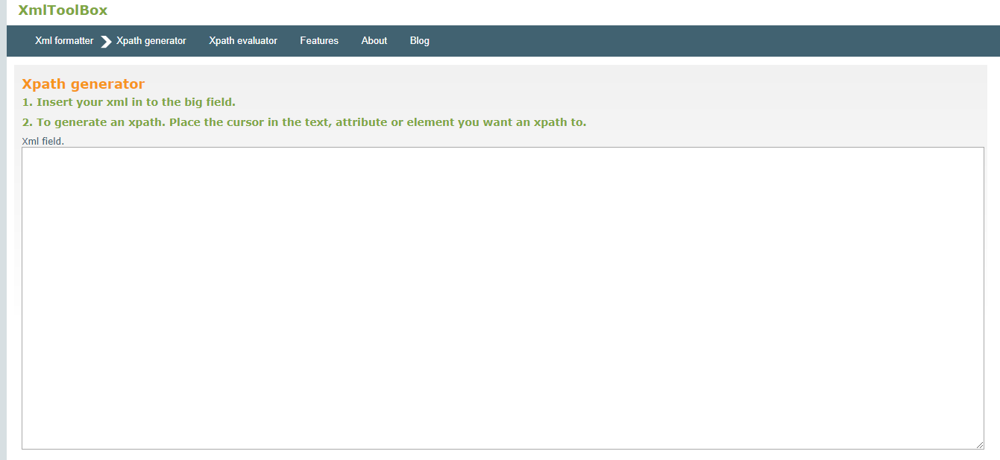
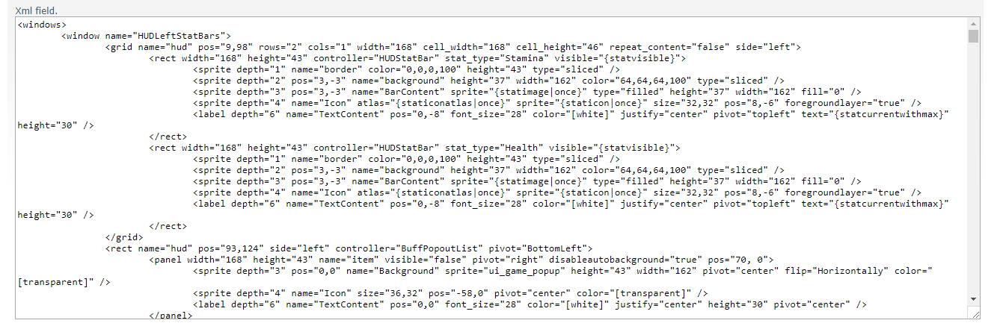
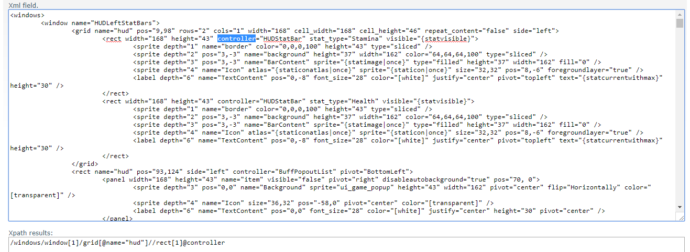

Now that you've completed the Intermediate Tutorial successfully, it's time to show you a bit about XPath
The XML portion of the Bigger Back Pack mod can be a bit confusing, because of the xpath.
I recommend using a site like https://xmltoolbox.appspot.com/xpath_generator.html to help generate your xpath. You will still need to make some changes, but it'll go a long way.

In the XML Input, copy and paste the window.xml file, found under your Data/Config/XUi/windows.xml

Once the XML is copy / pasted, you can now click on different values inside of the XML box to get it's Xpath result:
Note: I highlighted the 'controller' name for visibility. In order to get the XPath value, you do not need to highlight, just click on it.

The XPath result it came up with is: /windows/window[1]/grid[@name="hud"]//rect[1]@controller
While it may work, we can actually fix it to be even more reliable. By default, it's trying to use /window[1]/, so the first window in the file. However, if we are using a modded windows.xml, or if the vanilla one changes in the future, then this script won't return what you want. Looking at the xml, we know that the window name is actually "HUDLeftStatBars"
Let's fix it:
/windows/window[@name='HUDLeftStatBars']/grid[@name="hud"]//rect[1]@controller
The @name= allows us to specify the name attribute asa string. For this example, we want to specify exactly HUDleftStatBars. If this window ever changes spots in the future, the xpath with the name will still return the right window, while the generated one would likely fail.
The grid, mysteriously, has used the @name tag to make sure the right one is found. So we don't need to fix that one.
The rect[1] value, however, does need to be fixed. For this, we don't have a name attribute, so we need to find another unique attribute to use.
<rect width="168" height="43" controller="HUDStatBar" stat_type="Stamina" visible="{statvisible}">
Width, Height, Controller, and visible are not unique, as other <Rect> nodes have it. But the stat_type is unique.
Let's flesh it out:
/windows/window[@name='HUDLeftStatBars']/grid[@name="hud"]//rect[@stat_type="Stamina"]@controller
By default, that website uses double quotes to wrap around strings. We'll want to change those to single quotes, as our entire xpath will be wrapped around double quotes.
If we wanted to change that line, our Config xpath command would look like this:
<set xpath="/windows/window[@name='HUDLeftStatBars']/grid[@name='hud']//rect[@stat_type='Stamina']@controller">HUDStatBar2</set>
Created with the Personal Edition of HelpNDoc: Write eBooks for the Kindle